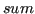

Programs also have variables with multiple assignments on same control flow path and it adds complexity on the way we verify programs. To avoid the complexity variables are renamed whenever new values are assigned, it is called as Static Single Assignment (SSA). This process is done on goto-programs before converting programs into propositional logic. For example, source code shown in fig:example:multiple:assignments can be represented as:

As we can see it is tricky to handle it in propositional logic since a variable is assigned a value and reused in the formula. To avoid it the CBMC converts logic as shown in fig:example:renaming:varibales.
Figure 2.9:
An example of Multiple assignments
 |
Figure 2.10:
Renaming variables
|  |
ash
2012-09-13